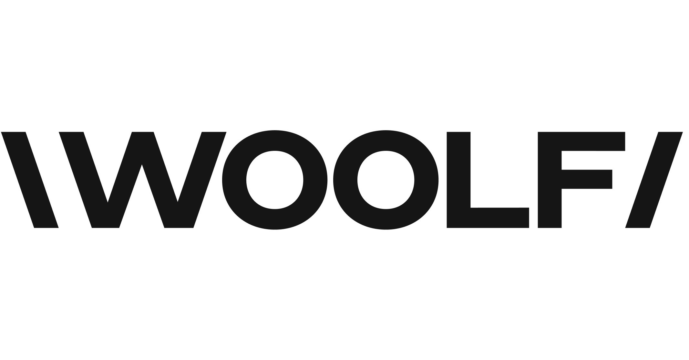

01
Integration Suite & BTP
Designing modular i-Flows and connected landscapes with SAP CPI, SAP BTP, API Management, Event Mesh, and SAP ECC.
SAP CPISAP BTPAPI Management
SAP Integration Developer · Bangalore, India
I design secure, scalable integration flows across cloud and on-premises systems with SAP BTP Integration Suite. Complex data movement becomes reliable, observable, and maintainable.
01 · About
I am an SAP Certified Integration Developer with over five years of experience building modular integration flows for complex enterprise landscapes.
My work sits between business-critical systems: SAP ECC, SuccessFactors, cloud platforms, and third-party services. I turn those moving parts into reliable integrations through thoughtful design, secure connectivity, and pragmatic automation.
Outside my core integration work, I am pursuing an M.Sc. in AI & ML and actively exploring GenAI, agentic AI, and CI/CD automation. Curiosity is not a side project for me; it is how I keep improving the systems I build.
I like solving the part of the problem where systems, people, and reliable execution have to meet.
02 · Expertise
Integration is more than moving payloads. I focus on clarity, security, recoverability, and long-term maintainability.
Designing modular i-Flows and connected landscapes with SAP CPI, SAP BTP, API Management, Event Mesh, and SAP ECC.
Working confidently across enterprise interfaces, from synchronous APIs to file-based transfers and SAP-native protocols.
Creating flexible transformations and orchestration with Groovy, message mapping, XSLT, XML, JSON, and value mapping.
Protecting integrations with token and certificate authentication, PGP encryption, SSL, Cloud Connector, monitoring, and root cause analysis.
03 · Experience
Building, securing, and supporting integrations where dependable execution is part of the product.
Combined experience
Over five years of hands-on experience designing, securing, and supporting enterprise integrations across cloud and on-premises landscapes.
04 · Selected work
A closer look at how I structure integrations around changing business rules, secure data transfer, and operational clarity.
Built an integration to fetch data from SAP ECC, SuccessFactors, and Fieldglass, dynamically routing calls based on API responses.
Groovy-powered routing, data mapping, error handling, and logging improved traceability while protecting data integrity.
Designed and deployed an SAP CPI i-Flow to extract expense reports and PDF attachments from Concur via OData and securely archive them in Azure Blob Storage using SFTP.
The implementation used client certificate authentication, dynamic OAuth token retrieval, parallel multicast, and reusable subprocesses.
05 · Learning radar
I am extending my integration foundation into data, AI, and delivery automation, with a focus on ideas that can become practical engineering improvements.
06 · Education

Official site ↗Woolf University & Scaler Academy
NMAM Institute of Technology, Nitte
Beyond the terminal
The best problem-solving rarely comes from staring at one problem all day. I recharge through sport and fitness, broaden my perspective through blogs, and make space for creativity through sketching.
Open to meaningful conversations
Let’s connect about SAP integration, automation, emerging technology, or the next engineering challenge.